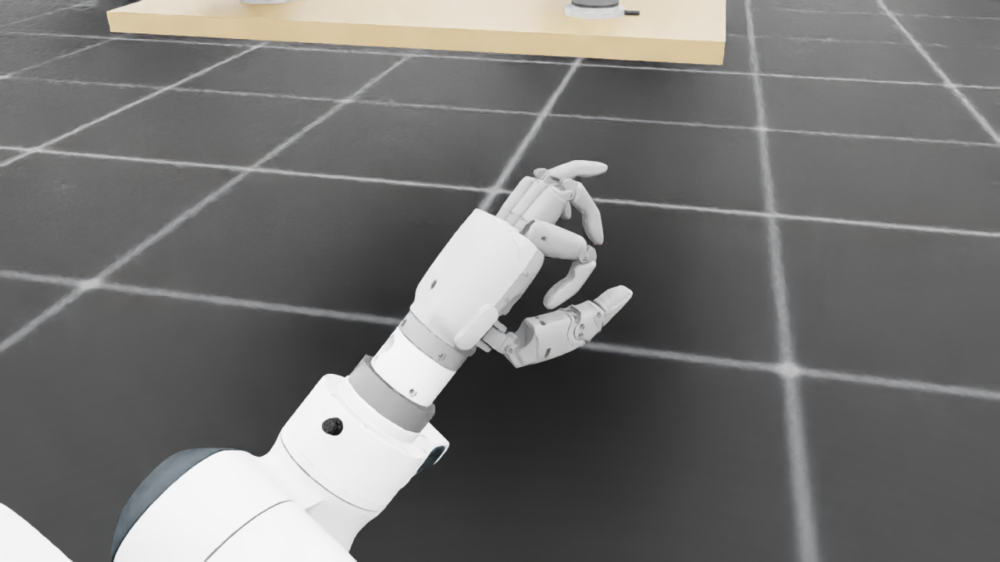
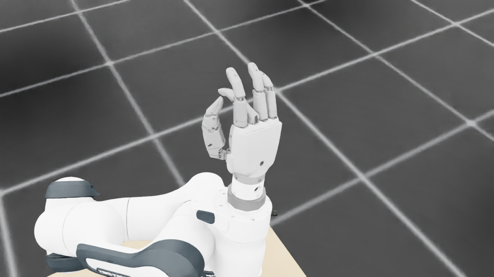
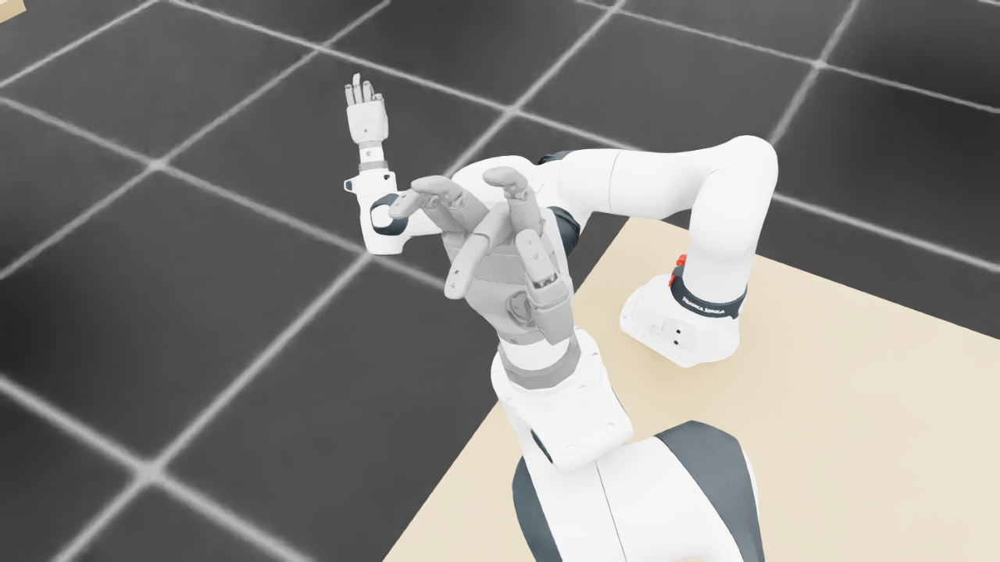
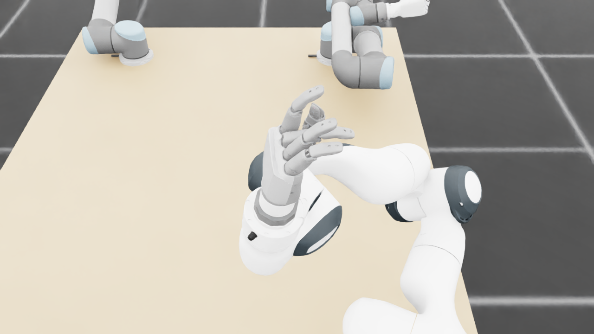
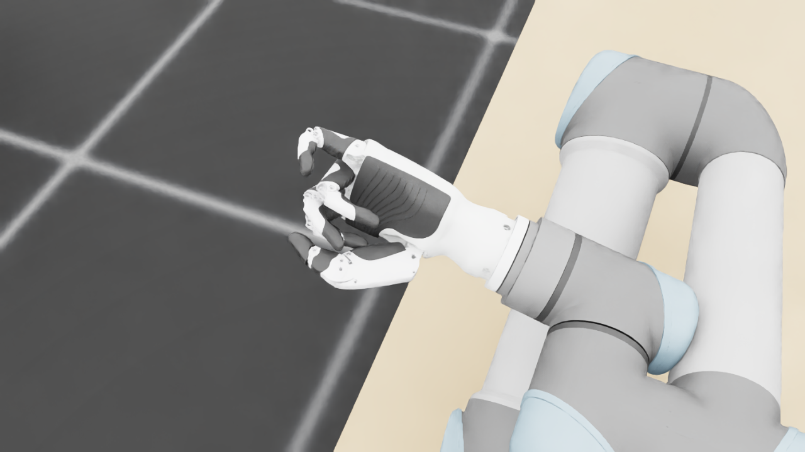
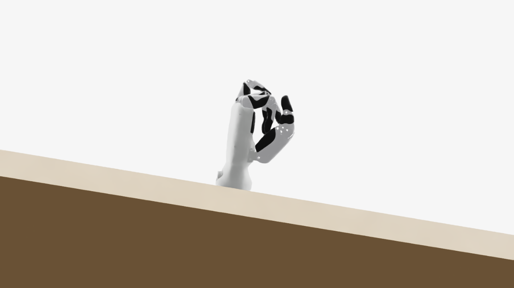
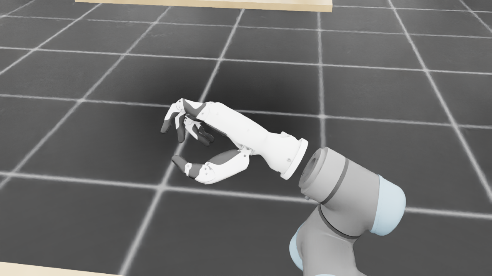
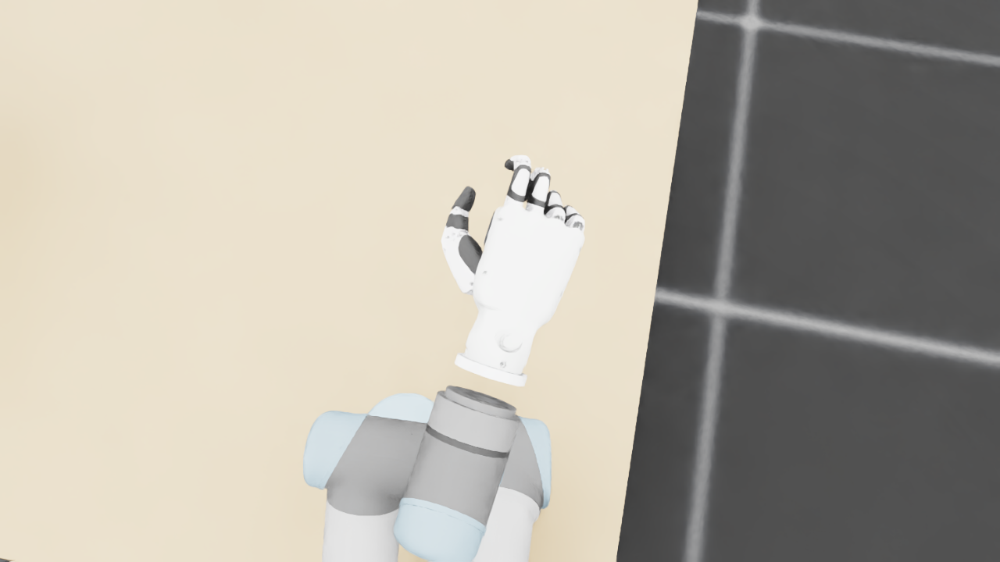
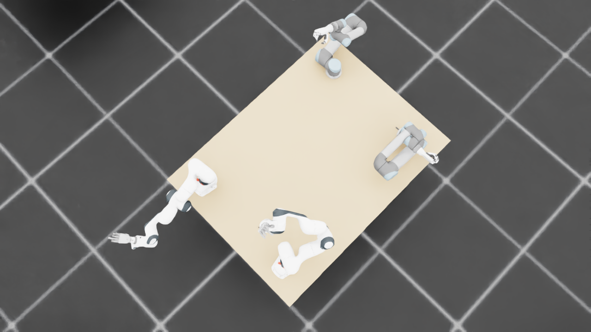
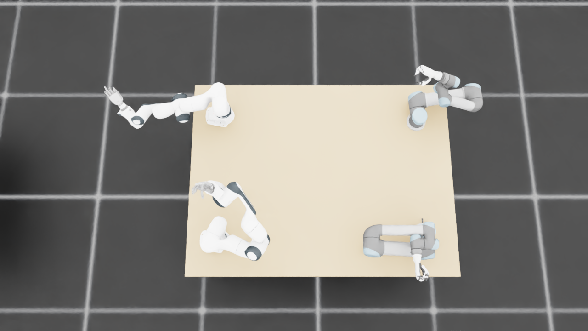

规定初始像素覆盖已通过独立数据验收，完整12步与物理安全未通过。Prescribed initial pixel coverage passes the independent DATA audit; full12-step and physical acceptance remain incomplete. Original1280×720; no edits/crop. Every image below is INITIAL, not micro1/final.
{"seed": 3, "proposal_id": 2913, "global_id": 33633, "family": 1}










{
"qualified": true,
"arms": {
"F_L": {
"qualified": true,
"palm_visual_peak_pixels": 21251,
"finger_family_peak_pixels": {
"thumb": 9076,
"index": 5032,
"middle": 4069,
"ring": 2938,
"little": 4840
},
"per_native_body_peak_pixels": {
"/World/envs/env_27/F_L/f2_hand/left_hand_base": 28052,
"/World/envs/env_27/F_L/f2_hand/left_index_1": 2897,
"/World/envs/env_27/F_L/f2_hand/left_middle_1": 2047,
"/World/envs/env_27/F_L/f2_hand/left_pinky_1": 3061,
"/World/envs/env_27/F_L/f2_hand/left_ring_1": 1433,
"/World/envs/env_27/F_L/f2_hand/left_thumb_1": 950,
"/World/envs/env_27/F_L/f2_hand/left_index_2": 2135,
"/World/envs/env_27/F_L/f2_hand/left_middle_2": 2022,
"/World/envs/env_27/F_L/f2_hand/left_pinky_2": 1779,
"/World/envs/env_27/F_L/f2_hand/left_ring_2": 1582,
"/World/envs/env_27/F_L/f2_hand/left_thumb_2": 4937,
"/World/envs/env_27/F_L/f2_hand/left_thumb_3": 1876,
"/World/envs/env_27/F_L/f2_hand/left_thumb_4": 1838
},
"native_body_visibility_gaps": [],
"all_native_hand_bodies_observed": true,
"full_mesh_coverage_certified": false,
"all_recorded_attempt_peak": {
"qualified": false,
"palm_visual_peak_pixels": 21251,
"finger_family_peak_pixels": {
"thumb": 9076,
"index": 5032,
"middle": 4069,
"ring": 2938,
"little": 5448
},
"per_native_body_peak_pixels": {
"/World/envs/env_27/F_L/f2_hand/left_hand_base": 28052,
"/World/envs/env_27/F_L/f2_hand/left_index_1": 2897,
"/World/envs/env_27/F_L/f2_hand/left_middle_1": 2047,
"/World/envs/env_27/F_L/f2_hand/left_pinky_1": 3436,
"/World/envs/env_27/F_L/f2_hand/left_ring_1": 1433,
"/World/envs/env_27/F_L/f2_hand/left_thumb_1": 950,
"/World/envs/env_27/F_L/f2_hand/left_index_2": 2135,
"/World/envs/env_27/F_L/f2_hand/left_middle_2": 2022,
"/World/envs/env_27/F_L/f2_hand/left_pinky_2": 2012,
"/World/envs/env_27/F_L/f2_hand/left_ring_2": 1582,
"/World/envs/env_27/F_L/f2_hand/left_thumb_2": 4937,
"/World/envs/env_27/F_L/f2_hand/left_thumb_3": 1876,
"/World/envs/env_27/F_L/f2_hand/left_thumb_4": 1838
},
"native_body_visibility_gaps": [],
"all_native_hand_bodies_observed": true,
"full_mesh_coverage_certified": false,
"qualification": false
},
"attempts": 4,
"decoded": 4
},
"F_R": {
"qualified": true,
"palm_visual_peak_pixels": 18623,
"finger_family_peak_pixels": {
"thumb": 6809,
"index": 4865,
"middle": 4494,
"ring": 4264,
"little": 4177
},
"per_native_body_peak_pixels": {
"/World/envs/env_27/F_R/f2_hand/right_hand_base": 21918,
"/World/envs/env_27/F_R/f2_hand/right_index_1": 2536,
"/World/envs/env_27/F_R/f2_hand/right_middle_1": 1893,
"/World/envs/env_27/F_R/f2_hand/right_pinky_1": 2073,
"/World/envs/env_27/F_R/f2_hand/right_ring_1": 2289,
"/World/envs/env_27/F_R/f2_hand/right_thumb_1": 480,
"/World/envs/env_27/F_R/f2_hand/right_index_2": 2329,
"/World/envs/env_27/F_R/f2_hand/right_middle_2": 2601,
"/World/envs/env_27/F_R/f2_hand/right_pinky_2": 2104,
"/World/envs/env_27/F_R/f2_hand/right_ring_2": 2149,
"/World/envs/env_27/F_R/f2_hand/right_thumb_2": 3405,
"/World/envs/env_27/F_R/f2_hand/right_thumb_3": 1669,
"/World/envs/env_27/F_R/f2_hand/right_thumb_4": 2330
},
"native_body_visibility_gaps": [],
"all_native_hand_bodies_observed": true,
"full_mesh_coverage_certified": false,
"all_recorded_attempt_peak": {
"qualified": false,
"palm_visual_peak_pixels": 23246,
"finger_family_peak_pixels": {
"thumb": 7441,
"index": 4865,
"middle": 4494,
"ring": 4264,
"little": 4177
},
"per_native_body_peak_pixels": {
"/World/envs/env_27/F_R/f2_hand/right_hand_base": 28129,
"/World/envs/env_27/F_R/f2_hand/right_index_1": 2536,
"/World/envs/env_27/F_R/f2_hand/right_middle_1": 1893,
"/World/envs/env_27/F_R/f2_hand/right_pinky_1": 2329,
"/World/envs/env_27/F_R/f2_hand/right_ring_1": 2289,
"/World/envs/env_27/F_R/f2_hand/right_thumb_1": 657,
"/World/envs/env_27/F_R/f2_hand/right_index_2": 2329,
"/World/envs/env_27/F_R/f2_hand/right_middle_2": 2601,
"/World/envs/env_27/F_R/f2_hand/right_pinky_2": 2104,
"/World/envs/env_27/F_R/f2_hand/right_ring_2": 2149,
"/World/envs/env_27/F_R/f2_hand/right_thumb_2": 4277,
"/World/envs/env_27/F_R/f2_hand/right_thumb_3": 1669,
"/World/envs/env_27/F_R/f2_hand/right_thumb_4": 2330
},
"native_body_visibility_gaps": [],
"all_native_hand_bodies_observed": true,
"full_mesh_coverage_certified": false,
"qualification": false
},
"attempts": 9,
"decoded": 9
},
"U_L": {
"qualified": true,
"palm_visual_peak_pixels": 13406,
"finger_family_peak_pixels": {
"thumb": 11539,
"index": 4567,
"middle": 2937,
"ring": 4673,
"little": 4437
},
"per_native_body_peak_pixels": {
"/World/envs/env_27/U_L/wrist_3_link": 44626,
"/World/envs/env_27/U_L/left_index_1": 2533,
"/World/envs/env_27/U_L/left_little_1": 2748,
"/World/envs/env_27/U_L/left_middle_1": 1203,
"/World/envs/env_27/U_L/left_ring_1": 2058,
"/World/envs/env_27/U_L/left_thumb_1": 394,
"/World/envs/env_27/U_L/left_index_2": 2034,
"/World/envs/env_27/U_L/left_little_2": 1689,
"/World/envs/env_27/U_L/left_middle_2": 2418,
"/World/envs/env_27/U_L/left_ring_2": 2615,
"/World/envs/env_27/U_L/left_thumb_2": 7030,
"/World/envs/env_27/U_L/left_thumb_3": 3001,
"/World/envs/env_27/U_L/left_thumb_4": 1314
},
"native_body_visibility_gaps": [],
"all_native_hand_bodies_observed": true,
"full_mesh_coverage_certified": false,
"all_recorded_attempt_peak": {
"qualified": true,
"palm_visual_peak_pixels": 13406,
"finger_family_peak_pixels": {
"thumb": 11539,
"index": 4567,
"middle": 2937,
"ring": 4673,
"little": 4437
},
"per_native_body_peak_pixels": {
"/World/envs/env_27/U_L/wrist_3_link": 66133,
"/World/envs/env_27/U_L/left_index_1": 2533,
"/World/envs/env_27/U_L/left_little_1": 2748,
"/World/envs/env_27/U_L/left_middle_1": 1603,
"/World/envs/env_27/U_L/left_ring_1": 2058,
"/World/envs/env_27/U_L/left_thumb_1": 394,
"/World/envs/env_27/U_L/left_index_2": 2034,
"/World/envs/env_27/U_L/left_little_2": 1689,
"/World/envs/env_27/U_L/left_middle_2": 2418,
"/World/envs/env_27/U_L/left_ring_2": 2615,
"/World/envs/env_27/U_L/left_thumb_2": 7030,
"/World/envs/env_27/U_L/left_thumb_3": 3001,
"/World/envs/env_27/U_L/left_thumb_4": 1314
},
"native_body_visibility_gaps": [],
"all_native_hand_bodies_observed": true,
"full_mesh_coverage_certified": false,
"qualification": false
},
"attempts": 4,
"decoded": 4
},
"U_R": {
"qualified": true,
"palm_visual_peak_pixels": 9277,
"finger_family_peak_pixels": {
"thumb": 10757,
"index": 4646,
"middle": 1798,
"ring": 2309,
"little": 3382
},
"per_native_body_peak_pixels": {
"/World/envs/env_27/U_R/wrist_3_link": 33387,
"/World/envs/env_27/U_R/right_index_1": 2728,
"/World/envs/env_27/U_R/right_little_1": 1836,
"/World/envs/env_27/U_R/right_middle_1": 1188,
"/World/envs/env_27/U_R/right_ring_1": 754,
"/World/envs/env_27/U_R/right_thumb_1": 459,
"/World/envs/env_27/U_R/right_index_2": 1918,
"/World/envs/env_27/U_R/right_little_2": 1546,
"/World/envs/env_27/U_R/right_middle_2": 1632,
"/World/envs/env_27/U_R/right_ring_2": 1717,
"/World/envs/env_27/U_R/right_thumb_2": 6178,
"/World/envs/env_27/U_R/right_thumb_3": 2883,
"/World/envs/env_27/U_R/right_thumb_4": 1237
},
"native_body_visibility_gaps": [],
"all_native_hand_bodies_observed": true,
"full_mesh_coverage_certified": false,
"all_recorded_attempt_peak": {
"qualified": true,
"palm_visual_peak_pixels": 9277,
"finger_family_peak_pixels": {
"thumb": 10757,
"index": 4646,
"middle": 1886,
"ring": 2309,
"little": 3382
},
"per_native_body_peak_pixels": {
"/World/envs/env_27/U_R/wrist_3_link": 33564,
"/World/envs/env_27/U_R/right_index_1": 2728,
"/World/envs/env_27/U_R/right_little_1": 1836,
"/World/envs/env_27/U_R/right_middle_1": 1188,
"/World/envs/env_27/U_R/right_ring_1": 754,
"/World/envs/env_27/U_R/right_thumb_1": 459,
"/World/envs/env_27/U_R/right_index_2": 1918,
"/World/envs/env_27/U_R/right_little_2": 1546,
"/World/envs/env_27/U_R/right_middle_2": 1632,
"/World/envs/env_27/U_R/right_ring_2": 1717,
"/World/envs/env_27/U_R/right_thumb_2": 6178,
"/World/envs/env_27/U_R/right_thumb_3": 2883,
"/World/envs/env_27/U_R/right_thumb_4": 1237
},
"native_body_visibility_gaps": [],
"all_native_hand_bodies_observed": true,
"full_mesh_coverage_certified": false,
"qualification": false
},
"attempts": 4,
"decoded": 4
}
},
"wide": {
"qualified": true,
"per_native_object_peak_pixels": {
"/World/envs/env_27/F_L/fr3_link0": 1594,
"/World/envs/env_27/F_L/fr3_link1": 1435,
"/World/envs/env_27/F_L/fr3_link2": 2895,
"/World/envs/env_27/F_L/fr3_link3": 1570,
"/World/envs/env_27/F_L/fr3_link4": 2411,
"/World/envs/env_27/F_L/fr3_link5": 1861,
"/World/envs/env_27/F_L/fr3_link6": 1130,
"/World/envs/env_27/F_L/fr3_link7": 502,
"/World/envs/env_27/F_L/fr3_link8": 115,
"/World/envs/env_27/F_L/f2_hand/left_hand_base": 739,
"/World/envs/env_27/F_L/f2_hand/left_index_1": 78,
"/World/envs/env_27/F_L/f2_hand/left_middle_1": 70,
"/World/envs/env_27/F_L/f2_hand/left_pinky_1": 61,
"/World/envs/env_27/F_L/f2_hand/left_ring_1": 60,
"/World/envs/env_27/F_L/f2_hand/left_thumb_1": 17,
"/World/envs/env_27/F_L/f2_hand/left_index_2": 43,
"/World/envs/env_27/F_L/f2_hand/left_middle_2": 51,
"/World/envs/env_27/F_L/f2_hand/left_pinky_2": 24,
"/World/envs/env_27/F_L/f2_hand/left_ring_2": 70,
"/World/envs/env_27/F_L/f2_hand/left_thumb_2": 97,
"/World/envs/env_27/F_L/f2_hand/left_thumb_3": 41,
"/World/envs/env_27/F_L/f2_hand/left_thumb_4": 46,
"/World/envs/env_27/F_R/fr3_link0": 1486,
"/World/envs/env_27/F_R/fr3_link1": 1446,
"/World/envs/env_27/F_R/fr3_link2": 2813,
"/World/envs/env_27/F_R/fr3_link3": 2131,
"/World/envs/env_27/F_R/fr3_link4": 1396,
"/World/envs/env_27/F_R/fr3_link5": 3290,
"/World/envs/env_27/F_R/fr3_link6": 710,
"/World/envs/env_27/F_R/fr3_link7": 765,
"/World/envs/env_27/F_R/fr3_link8": 120,
"/World/envs/env_27/F_R/f2_hand/right_hand_base": 675,
"/World/envs/env_27/F_R/f2_hand/right_index_1": 60,
"/World/envs/env_27/F_R/f2_hand/right_middle_1": 66,
"/World/envs/env_27/F_R/f2_hand/right_pinky_1": 74,
"/World/envs/env_27/F_R/f2_hand/right_ring_1": 72,
"/World/envs/env_27/F_R/f2_hand/right_thumb_1": 16,
"/World/envs/env_27/F_R/f2_hand/right_index_2": 73,
"/World/envs/env_27/F_R/f2_hand/right_middle_2": 94,
"/World/envs/env_27/F_R/f2_hand/right_pinky_2": 65,
"/World/envs/env_27/F_R/f2_hand/right_ring_2": 70,
"/World/envs/env_27/F_R/f2_hand/right_thumb_2": 97,
"/World/envs/env_27/F_R/f2_hand/right_thumb_3": 45,
"/World/envs/env_27/F_R/f2_hand/right_thumb_4": 62,
"/World/envs/env_27/U_L/base_link": 355,
"/World/envs/env_27/U_L/shoulder_link": 1000,
"/World/envs/env_27/U_L/upper_arm_link": 4303,
"/World/envs/env_27/U_L/forearm_link": 3824,
"/World/envs/env_27/U_L/wrist_1_link": 878,
"/World/envs/env_27/U_L/wrist_2_link": 864,
"/World/envs/env_27/U_L/wrist_3_link": 953,
"/World/envs/env_27/U_L/left_index_1": 10,
"/World/envs/env_27/U_L/left_little_1": 86,
"/World/envs/env_27/U_L/left_middle_1": 18,
"/World/envs/env_27/U_L/left_ring_1": 40,
"/World/envs/env_27/U_L/left_thumb_1": 2,
"/World/envs/env_27/U_L/left_index_2": 27,
"/World/envs/env_27/U_L/left_little_2": 51,
"/World/envs/env_27/U_L/left_middle_2": 40,
"/World/envs/env_27/U_L/left_ring_2": 59,
"/World/envs/env_27/U_L/left_thumb_2": 142,
"/World/envs/env_27/U_L/left_thumb_3": 50,
"/World/envs/env_27/U_L/left_thumb_4": 32,
"/World/envs/env_27/U_R/base_link": 374,
"/World/envs/env_27/U_R/shoulder_link": 1486,
"/World/envs/env_27/U_R/upper_arm_link": 5606,
"/World/envs/env_27/U_R/forearm_link": 2663,
"/World/envs/env_27/U_R/wrist_1_link": 452,
"/World/envs/env_27/U_R/wrist_2_link": 704,
"/World/envs/env_27/U_R/wrist_3_link": 1176,
"/World/envs/env_27/U_R/right_index_1": 76,
"/World/envs/env_27/U_R/right_little_1": 65,
"/World/envs/env_27/U_R/right_middle_1": 61,
"/World/envs/env_27/U_R/right_ring_1": 67,
"/World/envs/env_27/U_R/right_thumb_1": 14,
"/World/envs/env_27/U_R/right_index_2": 60,
"/World/envs/env_27/U_R/right_little_2": 9,
"/World/envs/env_27/U_R/right_middle_2": 28,
"/World/envs/env_27/U_R/right_ring_2": 21,
"/World/envs/env_27/U_R/right_thumb_2": 162,
"/World/envs/env_27/U_R/right_thumb_3": 69,
"/World/envs/env_27/U_R/right_thumb_4": 35,
"/World/envs/env_27/TableF": 100259,
"/World/envs/env_27/TableU": 103237
},
"arm_peak_pixels": {
"F_L": 13612,
"F_R": 13910,
"U_L": 11489,
"U_R": 11222
},
"table_peak_pixels": {
"TableF": 100259,
"TableU": 103237
},
"critical_body_peak_pixels": {
"/World/envs/env_27/U_L/forearm_link": 3824,
"/World/envs/env_27/U_L/wrist_2_link": 864,
"/World/envs/env_27/U_R/forearm_link": 2663,
"/World/envs/env_27/U_R/wrist_2_link": 704
}
},
"raw_attempt_count": 32,
"PNG_count": 32,
"angle_records": 32,
"max_actual_angle_identity_error_deg": 0.0,
"held_snapshot_checks": 1096,
"universal_visibility_impossible": false,
"full_mesh_coverage_certified": false
}